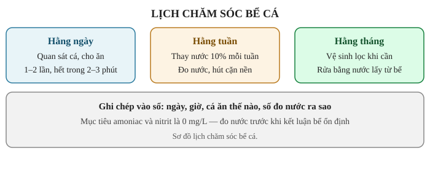

Lịch chăm sóc bể cá theo tuần và theo tháng: việc hằng ngày, hằng tuần, hằng tháng
Tác giả: Ruler
Bể cá khỏe không phải nhờ một lần chăm sóc thật kỹ, mà nhờ nhiều lần chăm sóc nhỏ, đều đặn. Người mới thường chăm bể theo cảm hứng: tuần này thay nước hai lần vì rảnh, ba tuần sau không động vào bể vì bận, rồi một hôm thấy cá lờ đờ mới vội thay gần hết nước và rửa sạch lọc. Cách làm đó làm nước lên xuống thất thường, và cá phải thích nghi lại sau mỗi lần "đại tu" như vậy.
Bài này không dạy lại cách cho ăn, thay nước hay vệ sinh lọc — ba việc đó đã có bài riêng (Cho cá cảnh ăn đúng cách: bao nhiêu, mấy lần và lỗi thường gặp, Thay nước cho bể cá đúng cách: bao nhiêu, bao lâu và lỗi thường gặp, Vệ sinh lọc và nền bể không làm mất vi khuẩn có lợi). Bài này làm một việc khác: xếp tất cả các việc đó vào một lịch — việc nào làm hằng ngày, việc nào làm hằng tuần, việc nào làm hằng tháng — để bạn không phải nhớ mang máng, và để mỗi việc làm đúng lúc của nó. Lịch này áp cho bể cộng đồng nước ngọt 60 lít, lọc đã chạy xong, nuôi một đàn cá như 10 loại cá cảnh dễ nuôi nhất cho người mới gợi ý. Bạn vẫn phải chỉnh lịch theo số đo nước của chính bể mình, vì không có lịch nào đúng cho mọi bể.
Chu trình nitơ chỉ được nhắc ngắn ở đây, vì đã giải thích đầy đủ ở Cách xử lý nước mới trước khi thả cá: vi khuẩn trong lọc biến amoniac thành nitrit rồi nitrat, còn thay nước giúp loãng bớt những chất lọc không xử lý nổi. Nếu bạn chưa đọc Cách xử lý nước mới trước khi thả cá, hãy đọc bài đó trước, vì mọi việc trong lịch này đều xoay quanh việc giữ cho vi khuẩn đó sống và giữ cho các chỉ số nước ổn định.
Ba nguyên tắc trước khi làm theo lịch

Thứ nhất, đo nước quyết định lịch, không phải lịch quyết định nước. RSPCA viết không thể biết chất lượng nước chỉ bằng cách nhìn: nước trong chưa chắc đã khỏe, vì vậy cần mua bộ test và đo nước hai tuần một lần, trong đó bộ test amoniac và nitrit là thứ bắt buộc, không phải đồ thêm. Mức an toàn mà RSPCA đặt ra là 0 mg/L cho cả amoniac và nitrit. Lịch trong bài này giả định bể của bạn đang ở mức đó. Nếu một lần đo cho thấy amoniac hoặc nitrit trên 0, bạn không làm theo lịch thường nữa mà chuyển sang cách xử lý khẩn cấp ở cuối bài.
Thứ hai, đừng làm mọi việc trong cùng một ngày. Vệ sinh lọc và nền bể không làm mất vi khuẩn có lợi đã phân tích kỹ điểm này: dồn vệ sinh lọc, hút nền, thay nhiều nước và thay vật liệu lọc vào cùng một buổi sẽ khuấy động hệ vi khuẩn quá mức trong một lần. Vì vậy lịch này rải việc ra nhiều tuần: lọc làm một tuần, nền làm một tuần khác, và lúc nào cũng để lại một phần vật liệu cũ cho vi khuẩn bám.
Thứ ba, ghi lại, đừng tin vào trí nhớ. Một dòng mỗi ngày trong sổ — ngày, giờ, cá ăn ra sao, nhiệt độ bao nhiêu, đã thay bao nhiêu lít nước — sau vài tuần sẽ lộ ra xu hướng mà trí nhớ không giữ được: nitrat có tăng dần không, tuần nào amoniac lên trên 0, cá bắt đầu bỏ ăn từ hôm nào. Phần sổ ghi chép ở cuối bài hướng dẫn ghi những gì và đọc xu hướng ra sao.
Hằng ngày: 5–10 phút, quan sát là chính
Việc hằng ngày không phải là việc dọn dẹp, mà là việc nhìn bể và cho ăn đúng. Aqueon viết với hầu hết các loài cá, cho ăn một hoặc hai lần mỗi ngày là đủ, mỗi lần chỉ cho lượng cá ăn hết trong 2–3 phút; thức ăn còn lại sau 5 phút thì vớt ra bằng vợt hoặc ống hút. Cách cho ăn đầy đủ, theo từng tầng bơi và từng loại thức ăn, đã viết ở Cho cá cảnh ăn đúng cách: bao nhiêu, mấy lần và lỗi thường gặp; bài này chỉ nhắc lại hai con số đó vì chúng là mốc hằng ngày của bạn.
Trong lúc cho ăn, hãy đếm cá và nhìn từng con một lúc. Cá nào không ra ăn, cá nào bơi khác thường, cá nào tách khỏi đàn — những thay đổi nhỏ đó là dấu hiệu sớm nhất, và Cá bỏ ăn, bơi lờ đờ, cạ mình: checklist chẩn đoán nhanh trước khi mua thuốc đã viết cách dùng chúng làm checklist chẩn đoán. Việc đếm cá nghe đơn giản, nhưng trong bể có cây và lũa, một con cá chết nằm khuất có thể làm nước bẩn rất nhanh nếu bạn không phát hiện ra trong một hai ngày. Vì vậy hãy đếm cá mỗi ngày, không phải mỗi tuần.
RSPCA viết nên dùng nhiệt kế riêng và kiểm tra nhiệt độ mỗi ngày, vì bộ điều nhiệt và sưởi đều có thể hỏng. Hãy nhìn nhiệt kế vào cùng một thời điểm mỗi ngày, tốt nhất là lúc cho ăn sáng, và ghi lại con số. Nhiệt độ nhảy lên xuống vài độ trong một ngày đáng chú ý hơn nhiệt độ hơi cao hay hơi thấp một chút nhưng ổn định, vì với cá nhiệt đới, nhiệt độ lên xuống thất thường nguy hiểm hơn là một mức nhiệt cố định trong khoảng loài chịu được.
Cũng trong vài phút đó, hãy liếc qua ba thiết bị: lọc có đang chảy nước ra không, sưởi có đèn báo bình thường không, đèn có bật và tắt đúng giờ không. RSPCA khuyên dùng đèn nhân tạo vào ban ngày để cá có chu trình sáng tối ổn định như ngoài tự nhiên, với chu kỳ sáng 8–10 giờ mỗi ngày và tắt đèn vào ban đêm, đồng thời không đặt bể gần cửa sổ vì nắng có thể làm nhiệt độ nước tăng cao nguy hiểm. Nếu bạn dùng hẹn giờ cho đèn, hãy kiểm tra hẹn giờ còn đúng giờ không mỗi tuần một lần, vì hẹn giờ lệch dần là chuyện thường gặp.
Nếu mực nước hạ xuống vì bay hơi, hãy bù bằng nước đã khử clo, có nhiệt độ gần với nước trong bể — cách chuẩn bị nước mới xem ở Thay nước cho bể cá đúng cách: bao nhiêu, bao lâu và lỗi thường gặp. Đừng bù bằng nước máy chưa xử lý, và đừng để mực nước hạ quá thấp rồi mới bù một lần, vì mực nước thấp làm sưởi có thể lộ ra khỏi nước khi đang chạy.
Hằng tuần: 20–30 phút, đo nước và thay nước
Buổi chăm sóc hằng tuần là buổi quan trọng nhất trong lịch. Buổi này bắt đầu bằng việc đo nước: con số đo được sẽ quyết định lần thay này thay bao nhiêu và có cần xử lý gì thêm không. Số đo đang an toàn thì cứ thay đúng lịch định kỳ; amoniac hoặc nitrit mà trên 0 thì bỏ lịch thường, làm theo mục xử lý khẩn cấp ở cuối bài.
Về tần suất đo, các nguồn không ghi giống nhau. RSPCA viết kiểm tra nước mỗi hai tuần, và trong lúc chạy lọc bể mới thì đo cách ngày. Thay nước cho bể cá đúng cách: bao nhiêu, bao lâu và lỗi thường gặp gợi ý người mới đo dày hơn mức tối thiểu của RSPCA trong tháng đầu tiên, rồi giãn dần khi bể đã ổn định. Bài này theo hướng đó: trong tháng đầu sau khi thả cá, hãy đo mỗi tuần; khi các chỉ số đã giữ vững qua nhiều tuần, đo hai tuần một lần theo RSPCA cũng đủ, miễn là đo đều và ghi lại. Điều quan trọng không phải là đo mỗi tuần hay mỗi hai tuần, mà là đo đều đặn và ghi lại để so sánh với tuần trước.
Về lượng nước thay, trên cùng một trang RSPCA ghi hai mốc khác nhau: chỗ thì khoảng 30% mỗi tuần, chỗ thì chỉ lấy ra 10%. Vì bản thân nguồn đã không thống nhất nên bài này không lấy một mốc nào làm luật duy nhất. Thay nước cho bể cá đúng cách: bao nhiêu, bao lâu và lỗi thường gặp đã đối chiếu các nguồn và chọn mốc bắt đầu là thay 10% hàng tuần, hoặc 25% hai tuần một lần — với bể 60 lít thì 10% tương đương 6 lít, 25% tương đương 15 lít. Hãy bắt đầu từ mốc đó, ghi lại số đo trước mỗi lần thay, rồi xem xu hướng nitrat mà chỉnh: nitrat cứ tăng dần qua các tuần dù thay nước đều thì thay dày hơn hoặc thay nhiều hơn một chút, vẫn trong mức Thay nước cho bể cá đúng cách: bao nhiêu, bao lâu và lỗi thường gặp cho phép, rồi đo lại sau hai tuần.
Trong buổi hằng tuần, hãy hút nhẹ cặn ở một phần nền bằng ống xi-phông trong lúc hút nước ra, và cạo rêu bám trên mặt kính trong. Hút nền thì làm theo cách Vệ sinh lọc và nền bể không làm mất vi khuẩn có lợi đã hướng dẫn: mỗi lần hút một phần nền — khoảng một phần ba tới một nửa — rồi đổi khu vực vào tuần sau; đừng hút sạch cả nền trong một lần, vì vi khuẩn trong nền sẽ bị xáo trộn hết cùng lúc. Nếu bạn hút nền mỗi tuần, hãy hút một khu vực khác nhau mỗi tuần, và ghi lại khu vực đã hút vào sổ để không hút trùng chỗ tuần trước rồi bỏ sót chỗ khác cả tháng.
Cuối buổi hằng tuần, hãy kiểm tra dòng nước chảy ra khỏi lọc. Nếu dòng nước ra yếu hẳn so với sau lần vệ sinh gần nhất, đó là dấu hiệu lọc cần được kiểm tra (xem Vệ sinh lọc và nền bể không làm mất vi khuẩn có lợi). Dòng yếu nhẹ mà chỉ số nước vẫn ổn thì ghi lại và dời việc vệ sinh sang tuần sau — Vệ sinh lọc và nền bể không làm mất vi khuẩn có lợi đã dặn không vệ sinh lọc trong cùng buổi với lần thay nước lớn.
Hai tuần một lần và hằng tháng: lọc, cây và thiết bị
Việc hai tuần một lần và hằng tháng là việc "đi sâu" hơn, nhưng vẫn phải làm từng phần, không làm hết cùng lúc. Vào buổi hằng tháng, làm hai việc theo RSPCA: khuấy nhẹ bọt lọc trong nước bể vừa hút ra — tuyệt đối không rửa dưới vòi, vì clo giết vi khuẩn có lợi — và tháo cánh quạt ra vệ sinh để lọc chạy trơn tru. Nên làm hai việc này vào một tuần mà bạn chỉ thay 10% nước, không phải tuần thay 25%.
Tần suất vệ sinh từng loại lọc — lọc bọt biển, lọc treo, lọc thùng và lịch riêng của mẫu lọc thùng Fluval 106 — đã có bảng đầy đủ ở Vệ sinh lọc và nền bể không làm mất vi khuẩn có lợi; xem bảng ở bài đó để làm theo. Nguyên tắc khi dùng bảng đó: ưu tiên hướng dẫn của chính chiếc lọc bạn đang dùng; hướng dẫn chung chỉ để tham khảo khi lọc của bạn không ghi rõ.
Vật liệu lọc hết hạn thì thay theo ngày ghi trên bao bì, không thay theo trí nhớ. Hạn thay của bông lọc và than hoạt tính theo Chewy và Petco đã so sánh ở Vệ sinh lọc và nền bể không làm mất vi khuẩn có lợi — hai nguồn ghi khác nhau vì nói về sản phẩm khác nhau, nên cách đúng là xem hạn sử dụng in trên bao bì của vật liệu bạn đang dùng rồi ghi ngày thay vào sổ. Vật liệu sinh học thì thay từng phần, giãn cách vài tuần giữa các lần, cho vi khuẩn có thời gian bám vào vật liệu mới.
Hằng tháng cũng là lúc tỉa cây và dọn đồ trang trí. Cách tỉa cây và chọn cây dễ sống đã viết ở Chọn đèn và cây thủy sinh dễ sống cho bể mới: bắt đầu ít, tăng dần; ở đây chỉ cần nhớ hai điểm: tỉa lá chết và lá vàng trước khi chúng rữa ra làm bẩn nước, và đừng tỉa hết cây trong bể trong cùng một lần với việc vệ sinh lọc. Đồ trang trí thì lấy ra cọ bằng bàn chải riêng, tuyệt đối không dùng xà phòng hay chất tẩy, rồi đặt lại đúng chỗ cũ để cá giữ chỗ trốn quen.
Cuối buổi hằng tháng, hãy kiểm tra nhanh thiết bị: dây điện và phích cắm có ẩm ướt hay nứt không, ống hút và ống xả của lọc có tắc cặn không, đèn còn sáng đều không, hẹn giờ còn đúng giờ không. Kiểm tra này chỉ mất vài phút, nhưng nó phát hiện hỏng hóc trước khi hỏng hóc thành sự cố lúc bạn đi vắng — và Cho cá ăn khi đi vắng: nhịn ăn, máy cho ăn, nhờ người chăm và lỗi thường gặp sẽ nói kỹ về việc chuẩn bị bể trước chuyến đi.
Theo quý: xem lại bể, không chỉ dọn bể
Mỗi ba tháng một lần, hãy dành một buổi để xem lại bể như một tổng thể, thay vì chỉ làm các việc dọn dẹp thường kỳ. Câu hỏi đầu tiên là bể có còn hợp với số cá đang nuôi không. RSPCA đưa ra hướng dẫn để tính: với cá nhiệt đới, cho khoảng 1,5–2 lít nước cho mỗi 1 cm chiều dài cá, không tính đuôi, và ghi rõ đây chỉ là hướng dẫn vì chất lượng nước còn phụ thuộc nhiều yếu tố khác như nhiệt độ, nguồn nước, sức lọc và cách bạn chăm bể. Nếu cá của bạn đã lớn lên nhiều từ lúc mua về, hoặc bạn đã thả thêm cá trong ba tháng qua, hãy tính lại theo hướng dẫn này và đo nước để xem bể có còn đủ chỗ không. Bể quá tải không sửa được bằng cách thay nước nhiều hơn, mà phải giảm số cá hoặc chuyển sang bể lớn hơn.
Buổi xem lại theo quý cũng là lúc kiểm tra những thứ hao mòn chậm mà lịch hằng tháng không bắt tới: gioăng lọc có còn kín không, bọt lọc có bắt đầu rã ra không, ống dẫn nước có nứt hay cứng lại không, đèn có mờ đi so với lúc mới mua không. Những thứ này hỏng dần dần nên người nuôi ít để ý, cho tới khi chúng hỏng hẳn vào một ngày bận rộn. Ghi lại tình trạng của chúng vào sổ theo quý, và thay từng món khi tới hạn của hãng, không đợi tới lúc hỏng mới thay.
Sổ ghi chép: ghi gì và đọc ra sao
Sổ ghi chép là thứ biến lịch chăm sóc từ một danh sách việc làm thành một công cụ chẩn đoán. Bạn không cần sổ cầu kỳ: một quyển vở đặt cạnh bể, hoặc một bảng tính trên điện thoại, đều được. Điều cần là ghi đều và ghi cùng một mẫu mỗi lần.
Mỗi ngày ghi một dòng: ngày, cá ăn hết trong bao lâu, cá nào không ăn, nhiệt độ, có gì lạ không. Mỗi tuần ghi thêm: kết quả đo amoniac, nitrit, nitrat, pH, số lít nước đã thay, khu vực nền đã hút, việc gì đã làm thêm. Mỗi tháng ghi thêm: đã vệ sinh phần lọc nào, đã thay vật liệu nào và ngày thay, cây đã tỉa ra sao.
Sau vài tuần, hãy đọc sổ theo xu hướng, không đọc từng con số riêng lẻ. Nitrat cứ tăng dần qua ba bốn tuần liền, dù amoniac và nitrit vẫn ở 0, thì bể cần thay nước nhiều hơn mức hiện tại — hãy thay dày hơn hoặc thay nhiều hơn một chút, vẫn trong mức Thay nước cho bể cá đúng cách: bao nhiêu, bao lâu và lỗi thường gặp cho phép, rồi đo lại sau hai tuần. Amoniac lên trên 0 sau một lần vệ sinh lọc là dấu hiệu bạn đã vệ sinh quá mạnh hoặc thay quá nhiều vật liệu trong một lần — lần sau hãy làm nhẹ hơn và chia nhỏ ra. Cá bỏ ăn đúng sau lần thay nước thì nhiều khả năng nước mới có vấn đề — Thay nước cho bể cá đúng cách: bao nhiêu, bao lâu và lỗi thường gặp đã có checklist ba thứ cần kiểm tra theo thứ tự (nhiệt độ nước mới, thuốc xử lý nước có diệt được cloramin không, lần thay đó có vượt 25% không); xem checklist ở bài đó.
Lịch mẫu bốn tuần cho bể 60 lít đã ổn định
Lịch dưới đây tổng hợp việc cho ăn (Cho cá cảnh ăn đúng cách: bao nhiêu, mấy lần và lỗi thường gặp), thay nước (Thay nước cho bể cá đúng cách: bao nhiêu, bao lâu và lỗi thường gặp) và vệ sinh lọc (Vệ sinh lọc và nền bể không làm mất vi khuẩn có lợi) cho một bể 60 lít đã ổn định, nuôi đàn cá như 10 loại cá cảnh dễ nuôi nhất cho người mới gợi ý. Đây chỉ là lịch khởi đầu, không phải lịch cứng cho mọi bể — hãy chỉnh theo loại lọc bạn dùng và theo số đo của chính bể mình.
| Tuần | Hằng ngày | Buổi hằng tuần | Việc thêm trong tuần |
|---|---|---|---|
| Tuần 1 | Cho ăn 1–2 lần, hết trong 2–3 phút; đếm cá; xem nhiệt độ và thiết bị | Đo nước rồi thay; thay 10% nước (6 lít); hút nhẹ một phần nền; cạo rêu kính | Kiểm tra hẹn giờ đèn còn đúng giờ không |
| Tuần 2 | Như tuần 1; ghi lại cá nào không ăn | Đo nước; thay 10% nước (6 lít); hút nhẹ một phần nền khác, đổi khu vực | Rửa bọt lọc bằng nước bể cũ nếu dòng chảy đã yếu |
| Tuần 3 | Như tuần 1; quan sát cây có lá vàng không | Đo nước; thay 10% nước (6 lít); hút phần nền còn lại, xong một vòng xoay ba tuần | Tỉa lá chết; xem cánh quạt và ống lọc có tắc không |
| Tuần 4 | Như tuần 1; xem lại sổ ghi chép của cả tháng | Đo nước; thay 25% nước (15 lít) thay vì 10% như mọi tuần; hút nhẹ chỗ bẩn nhất | Xem vật liệu lọc nào tới hạn theo hãng; thay từng phần, giữ lại vật liệu sinh học cũ |
Lịch này cố tình không ghi "tháo hết lọc ra rửa mỗi tháng" hay "thay hết nước mỗi tháng": hai việc đó không nằm trong hướng dẫn của nguồn nào đã mở, và Aqueon cũng dặn đừng tháo tung toàn bộ bể ra để dọn. Lịch này cũng để trống việc vệ sinh lọc sâu vào tuần thay 25% nước, để hai việc xáo trộn vi khuẩn không rơi vào cùng một buổi.
Checklist in được
In hai bảng dưới đây ra và dán cạnh bể. Đánh dấu vào ô mỗi khi làm xong một việc, và ghi ngày vào cột cuối.
Checklist hằng ngày — 5 phút
| ☐ | Việc | Ghi chú |
|---|---|---|
| ☐ | Cho ăn 1–2 lần, hết trong 2–3 phút; vớt thừa sau 5 phút | Lượng thức ăn theo Cho cá cảnh ăn đúng cách: bao nhiêu, mấy lần và lỗi thường gặp |
| ☐ | Đếm cá, quan sát cá nào không ăn hoặc bơi khác thường | Ghi lại cá lạ vào sổ |
| ☐ | Kiểm tra nhiệt độ bằng nhiệt kế riêng | Ghi con số vào sổ |
| ☐ | Kiểm tra lọc đang chảy, sưởi và đèn hoạt động bình thường | Nếu thiết bị dừng, xử lý ngay, đừng để tới cuối tuần |
| ☐ | Bù nước bay hơi bằng nước đã khử clo, đúng nhiệt độ | Đừng để mực nước hạ quá thấp mới bù |
Checklist hằng tuần và hằng tháng
| ☐ | Việc | Khi nào |
|---|---|---|
| ☐ | Đo đủ 5 chỉ số (amoniac, nitrit, nitrat, pH, nhiệt độ) rồi ghi lại | Hằng tuần trong tháng đầu, sau đó mỗi 1–2 tuần |
| ☐ | Thay 10% nước (6 lít) hoặc 25% (15 lít) mỗi hai tuần | Hằng tuần, theo Thay nước cho bể cá đúng cách: bao nhiêu, bao lâu và lỗi thường gặp |
| ☐ | Hút nhẹ một phần nền, đổi khu vực mỗi tuần | Hằng tuần, không hút hết nền một lần |
| ☐ | Cạo rêu trên mặt kính trong | Hằng tuần, khi cần |
| ☐ | Rửa vật liệu lọc bằng nước bể cũ | Hằng tháng, hoặc khi dòng nước yếu rõ rệt |
| ☐ | Vệ sinh cánh quạt và ống lọc | Hằng tháng |
| ☐ | Thay vật liệu lọc hết hạn theo hãng, từng phần | Khi tới hạn ghi trên bao bì |
| ☐ | Tỉa lá chết, dọn đồ trang trí | Hằng tháng |
| ☐ | Xem lại sổ cuối tháng: nitrat có tăng dần không, tuần nào amoniac vượt 0 không | Cuối mỗi tháng |
Năm lỗi người mới hay mắc nhất
Lỗi thứ nhất: dồn mọi việc vào một buổi. Người mới thường để bể bẩn ba tuần rồi dành một buổi chiều để làm hết: thay nửa bể nước, rửa sạch lọc, hút toàn bộ nền, cọ sạch đồ trang trí. Sau buổi đó nước đục trắng, cá mệt, và amoniac có thể tăng lên trong tuần sau. Cách đúng là chia việc ra các tuần như lịch trên, và chấp nhận rằng bể không cần sạch bóng mọi lúc — bể cần ổn định.
Lỗi thứ hai là vệ sinh lọc bằng nước máy. RSPCA dặn rõ: bọt lọc thì đừng rửa dưới vòi, vì clo và cloramin trong nước máy diệt vi khuẩn chỉ trong vài giây (Vệ sinh lọc và nền bể không làm mất vi khuẩn có lợi đã giải thích kỹ). Rửa bằng nước bể vừa hút ra, và đừng để vật liệu lọc bị khô trong lúc vệ sinh.
Lỗi thứ ba là thay nước mà không đo trước. Nếu bạn thay nước rồi mới đo, bạn không biết nước trước khi thay tệ tới mức nào, và không biết lần thay đó có đủ hay không. Hãy đo trước khi thay, ghi lại, rồi thay nước, và đo lại sau vài ngày nếu lần đo trước có chỉ số bất thường.
Lỗi thứ tư là đổi lịch liên tục. Tuần này thay 10%, tuần sau nghe người khác nói nên thay 30%, tuần sau nữa lại đổi sang 25% mỗi hai tuần. Mỗi lần đổi lịch, bạn lại mất vài tuần để biết lịch đó có hợp với bể mình không. Hãy chọn một điểm khởi đầu, giữ đều đặn ít nhất một tháng, ghi lại kết quả đo, rồi mới điều chỉnh một thứ duy nhất mỗi lần.
Lỗi thứ năm là quên cắm lại thiết bị. Sau khi vệ sinh lọc hoặc thay nước, người nuôi rút điện sưởi và lọc ra rồi quên cắm lại, hoặc cắm lọc lại khi lọc chưa đầy nước. Hãy kiểm tra lại bằng mắt và bằng tay trước khi rời khỏi bể: lọc có nước chảy ra không, sưởi có đèn báo không, nhiệt độ có về đúng mức sau khoảng 30 phút không. Ghi "đã cắm lại thiết bị" vào checklist hằng tuần để không bỏ sót bước này.
Khi nào phá lịch: dấu hiệu khẩn cấp
Lịch trong bài chỉ dùng khi cá khỏe và các chỉ số nước đang ở mức an toàn. Có ba trường hợp bạn phải bỏ lịch thường và xử lý ngay. Thứ nhất, amoniac hoặc nitrit đo được trên 0: RSPCA viết khi đó cần thay một nửa bể nước mỗi ngày, đo lại liên tục cho tới khi nước cải thiện. Thứ hai, cá ngoi lên mặt nước thở gấp, bỏ ăn hàng loạt hoặc chết nhiều con trong một ngày: hãy đo nước ngay và làm theo checklist chẩn đoán trong Cá bỏ ăn, bơi lờ đờ, cạ mình: checklist chẩn đoán nhanh trước khi mua thuốc, đừng chờ tới buổi chăm sóc hằng tuần. Thứ ba, nước đục trắng, đục xanh hoặc có mùi hôi nặng: hãy phân biệt màu nước theo Nước bể đục trắng, đục xanh: phân biệt màu nước rồi mới xử lý rồi mới xử lý, vì mỗi loại đục có cách xử lý khác nhau.
Trong cả ba trường hợp, nguyên tắc đều giống nhau: đo nước trước, làm từng bước nhỏ, ghi lại những gì đã làm, và hỏi cửa hàng thủy sinh uy tín hoặc bác sĩ thú y chuyên về cá khi dấu hiệu nặng hoặc kéo dài. Lịch chăm sóc tốt không phải là lịch không bao giờ bị phá vỡ, mà là lịch giúp bạn phát hiện sớm khi nào cần phá vỡ nó.
Kết luận
Chăm sóc bể cá không khó vì mỗi việc riêng lẻ đều khó, mà khó vì người nuôi phải nhớ nhiều việc nhỏ và làm chúng đều đặn. Một lịch viết ra giấy, dán cạnh bể, cộng với một quyển sổ ghi lại kết quả đo, sẽ làm thay phần lớn trí nhớ đó. Hằng ngày chỉ cần 5–10 phút quan sát và cho ăn đúng. Hằng tuần cần 20–30 phút đo nước, thay nước và hút một phần nền. Hằng tháng cần thêm một buổi vệ sinh lọc và tỉa cây, làm từng phần và không làm cùng ngày với lần thay nước lớn. Mỗi quý xem lại bể một lần để biết bể có còn hợp với số cá đang nuôi không.
Nếu bạn mới bắt đầu, đừng cố làm theo toàn bộ lịch này ngay trong tuần đầu. Hãy bắt đầu bằng hai việc: cho ăn đúng theo Cho cá cảnh ăn đúng cách: bao nhiêu, mấy lần và lỗi thường gặp và đo nước mỗi tuần. Khi hai việc đó đã thành thói quen, hãy thêm thay nước theo Thay nước cho bể cá đúng cách: bao nhiêu, bao lâu và lỗi thường gặp, rồi thêm vệ sinh lọc theo Vệ sinh lọc và nền bể không làm mất vi khuẩn có lợi. Lịch tốt nhất không phải là lịch đầy đủ nhất, mà là lịch bạn thực sự làm được đều đặn trong nhiều tháng.
Nguồn tham khảo
- RSPCA, "Choosing an Aquarium for Pet Fish" — kiểm tra nhiệt độ mỗi ngày bằng nhiệt kế riêng; đèn 8–10 giờ mỗi ngày; kiểm tra nước mỗi hai tuần, bộ test amoniac và nitrit là thiết yếu, mức an toàn 0 mg/L cho cả hai; thay một nửa nước mỗi ngày khi chỉ số cao; khuấy nhẹ bọt lọc trong nước bể đã hút ra, không bao giờ rửa dưới vòi; giữ các bộ phận của lọc sạch, trong đó có việc tháo và vệ sinh cánh quạt; hướng dẫn 1,5–2 lít nước cho mỗi 1 cm cá nhiệt đới, không tính đuôi, chỉ là hướng dẫn; trang này ghi 30%/tuần ở mục lọc và lấy ra 10% ở mục thay nước — hai con số khác nhau trên cùng một trang, vì vậy bài không dùng một con số duy nhất làm quy tắc (truy cập 23/11/2026): https://science.rspca.org.uk/en/web/rspca/adviceandwelfare/pets/fish/environment
- Aqueon, "How to Properly Feed Your Fish" — cho ăn một hoặc hai lần mỗi ngày là đủ, chỉ cho lượng cá ăn hết trong 2–3 phút, vớt thức ăn thừa sau 5 phút, một số người nuôi cho cá nhịn ăn một hoặc hai ngày mỗi tuần, cá lớn ít vận động nhịn ăn lâu hơn cá nhỏ năng động, cá con mới nở cần cho ăn thường xuyên hơn, đèn bật ít nhất 30 phút trước bữa sáng và sau bữa tối, dấu hiệu cho ăn quá nhiều thì giảm lượng ăn 50% (truy cập 23/11/2026): https://www.aqueon.com/articles/how-to-properly-feed-your-fish
- Chewy, "How to Clean an Aquarium Filter Safely" — lọc treo và lọc thùng vệ sinh 1–2 lần mỗi tháng tùy bể, bông lọc thay khoảng mỗi tuần một lần hoặc khi tắc, than hoạt tính thay khi hết hạn sử dụng thường khoảng một tháng, đừng làm các bước vệ sinh cùng lúc mà hãy chia nhỏ ra từng phần, tránh vệ sinh hoặc thay toàn bộ vật liệu sinh học trong một lần (truy cập 23/11/2026): https://www.chewy.com/education/fish/general/how-to-clean-aquarium-filter
- Các bài liên quan trong website này: cách xử lý nước mới trước khi thả cá (chu trình nitơ và chạy lọc không cá), cho cá cảnh ăn đúng cách: bao nhiêu, mấy lần và lỗi thường gặp (cho ăn đúng cách), thay nước cho bể cá đúng cách: bao nhiêu, bao lâu và lỗi thường gặp (thay nước), vệ sinh lọc và nền bể không làm mất vi khuẩn có lợi (vệ sinh lọc và nền bể), nước bể đục trắng, đục xanh: phân biệt màu nước rồi mới xử lý (nước đục), cá bỏ ăn, bơi lờ đờ, cạ mình: checklist chẩn đoán nhanh trước khi mua thuốc (checklist chẩn đoán khi cá có dấu hiệu lạ), chọn đèn và cây thủy sinh dễ sống cho bể mới: bắt đầu ít, tăng dần (đèn và cây thủy sinh).